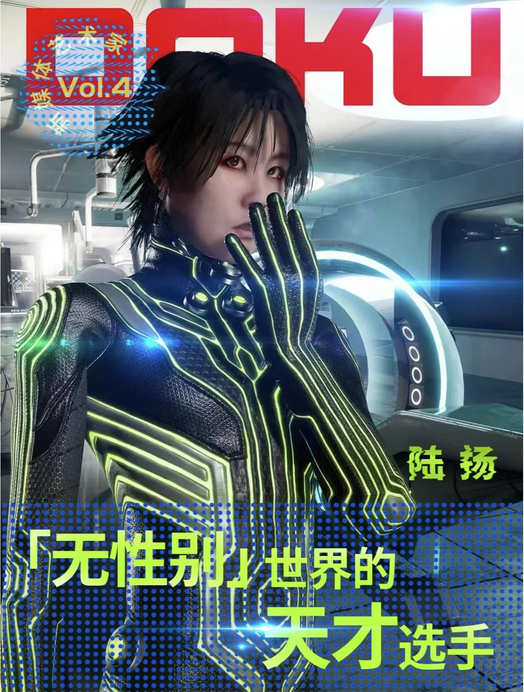

陆扬1984年出生于中国上海，2010年毕业于中国美术学院新媒体系硕士学位，目前生活并工作于北京和上海。
陆扬在新媒体艺术和生物艺术领域中备受瞩目。她善于利用多种媒介, 包括影像、装置、动画、摄影和游戏等，探索生命的本质及其生命的存在。作品利用融合科学、宗教、心理学、神经科学、医学、游戏、流行文化和音乐等多种领域，呈现她独有的幻想，信仰以及宇宙观。同时，在其美学体系中特有的生物与特定元素，也隐喻了人自身短暂脆弱无常的存在。

早八人，不要犯困！
让我们浅浅欣赏一下陆扬的反讽、荒诞、重口和劲爆电子乐！
请看——妄想曼陀罗
此作是作者首次以自己为原型创建了一个数字化无性别人类模拟个体进行创作的作品，原因只是作品内容具有强大的世间诅咒力量，为不伤及他人，作者只能施咒于自身。
作品中围绕作者一直感兴趣的神经科学展开，利用脑立体定向系统，深层脑刺激以及经颅磁刺激技术作用于深脑边缘系统的原理，延展展开妄想，代入宗教视觉和对器世界的无常观想，进行客观妄想。
此作是作者对曾经以及现在未来创作工作的反思。意识附着在大脑么？意识到底在哪？作者在作品中模拟实施了一次次对于自我以及自我作品摧毁毁灭的妄想。能够肯定的是这些模拟最终都将实现。
最后，带大家沉浸式看展！
陆扬：脑髓天国